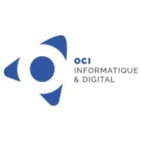

[À COMPLÉTER]
~ $ whoami
Bienvenue sur mon portfolio. Vous y découvrirez en détail mon parcours, mes projets ainsi que les compétences techniques que je développe au quotidien. Actuellement en BUT Réseaux et Télécommunications, j'affine mon expertise en administration système, en réseaux et en cybersécurité. Curieux et déterminé, mon objectif est de devenir pentester.Welcome to my portfolio. Here you will discover in detail my background, my projects, and the technical skills I develop daily. Currently studying Networks and Telecommunications, I am refining my expertise in system administration, networking, and cybersecurity. Curious and determined, my goal is to become a pentester.
# le BUT RT en 30 secondesthe BUT RT in 30 seconds
[À COMPLÉTER : ton explication du BUT RT pour quelqu'un qui ne le connaît pas]
En dehors de mon parcours scolaire, j'ai pu acquérir une expérience professionnelle au cours de stages et d'emplois saisonniers.Outside of my academic curriculum, I have gained professional experience through internships and seasonal jobs.
[À COMPLÉTER : poste et missions]

STAGE · 8 SEMAINESINTERNSHIP · 8 WEEKS2026Suivi de techniciens itinérants généralistes en informatique.Shadowing general IT field technicians.
Détails du stage →Internship details →Accueil de la clientèle, gestion des opérations courantes et accompagnement administratif.Customer reception, daily operations management, and administrative support.
Gestion logistique des stocks et mise en rayon. Job d'été.Inventory logistics management and shelving. Summer job.
Découverte du fonctionnement d'un bureau d'étude technique spécialisé en réalité virtuelle.Discovery of a technical engineering consulting firm specializing in virtual reality.
Déploiement, configuration et maintien en condition opérationnelle d'environnements clients et serveurs.Deployment, configuration, and maintenance of client and server environments.
Conception, simulation et interconnexion d'infrastructures réseaux LAN/WAN.Design, simulation, and interconnection of LAN/WAN infrastructures.
Analyse des vulnérabilités, mise en place de politiques de sécurité et sécurisation des flux.Vulnerability analysis, implementation of security policies, and traffic securing.
Création d'outils automatisés, de scripts d'administration et bases en développement Web.Creation of automated tools, administration scripts, and web development basics.
Mise en place et gestion de solutions de téléphonie sur IP.Implementation and management of IP telephony solutions.
Hébergement et virtualisation des services de base.Hosting and virtualization of core services.
Lors de ma formation ainsi que mes différentes expériences professionnelles, j'ai aussi pu développer des soft skills, notamment en gestion de projet et en communication. Ces notions sont tout aussi essentielles à mon parcours car elles me permettent de m'organiser en projet (SAE) et en environnement professionnel.During my training and professional experiences, I have also developed soft skills, notably in project management and communication. These concepts are equally essential to my journey as they allow me to organize myself in projects (SAE) and in a professional environment.
L'anglais étant essentiel en informatique, j'ai pu développer un bon niveau en communication écrite et orale, de part ma formation ainsi que mon expérience personnelle (lecture de documentations, youtube, jeux-vidéos, musique...)English being essential in IT, I have developed a good level of written and oral communication, through my education and personal experience (reading documentation, YouTube, video games, music...)
Lors de mes différentes expériences professionnelles, j'ai pu m'intégrer dans des environnements variés qui m'ont permis de développer mes compétences en communication.During my various professional experiences, I integrated into varied environments which allowed me to develop my communication skills.
Lors des projets auxquels j'ai pu participer, j'ai pu m'organiser et communiquer dans des environnement nécessitant une bonne gestion de projet (diagramme de Gantt, github, moyens de communications...).During the projects I participated in, I learned to organize and communicate in environments requiring good project management (Gantt charts, GitHub, communication tools...).
La curiosité est une qualité essentielle en informatique, c'est ce qui m'a permis d'apprendre de nombreuses notions par moi-même en consultant diverses documentations par exemple.Curiosity is an essential quality in IT; it's what allowed me to learn many concepts on my own by consulting various documentations, for example.
Lors de ma formation, j'ai pu participer à divers SAE (Situations d'Apprentissage et d'Évaluation) regroupant les compétences acquises au cours de l'année. Ces projets permettent de mettre mes connaissances directement en application dans des environnements réalistes. La majorité étant réalisée en groupe, ces projets participent aussi à améliorer mes compétences en communication, en travail d'équipe et en gestion de projet.During my studies, I participated in various SAE (Situations d'Apprentissage et d'Évaluation) gathering the skills acquired during the year. These projects allow me to apply my knowledge directly in realistic environments. Most of them being group work, these projects also help improve my skills in communication, teamwork, and project management.
BUT1
BUT2
BUT3
[À COMPLÉTER : SAE prévues en BUT3]Consultez ou téléchargez mes CV mis à jour.View or download my updated resumes.
Vous avez un projet, une question ou une opportunité à me proposer ? N'hésitez pas à me joindre via l'un des moyens ci-dessous.Have a project, a question, or an opportunity to propose? Feel free to reach out via any of the methods below.